\(\textbf{Pano3D}\) is a new benchmark for depth estimation from spherical panoramas. Its goal is to drive progress for this task in a consistent and holistic manner. To achieve that we generate a new dataset and integrate evaluation metrics that capture not only depth performance, but also secondary traits like boundary preservation and smoothness. Moreover, \(\textbf{Pano3D}\) takes a step beyond typical intra-dataset evaluation schemes
to inter-dataset performance assessment. By disentangling generalization to three different axes, \(\textbf{Pano3D}\) facilitates proper extrapolation assessment under different out-of-training data conditions.
Relying on the \(\textbf{Pano3D}\) holistic benchmark for 360 depth estimation we perform an extended analysis and derive a solid baseline for the task.
Depth estimation performance evaluation
For evaluating depth from spherical panoramas we show that
without proper weighting the metrics favour performance in distorted areas.
Apart from the direct depth performance metrics, the Pano3D benchmark also
includes implementations for metrics measuring depth boundary preservation and
depth smoothness.. Finally, it also includes aggregated 3D metrics that consolidate
boundary and smoothness errors in different ways that are more appropriate for
different downstream tasks (e.g. view synthesis or 3D reconstruction).
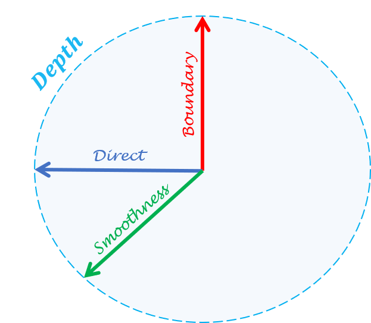
Generalization capacity assessment
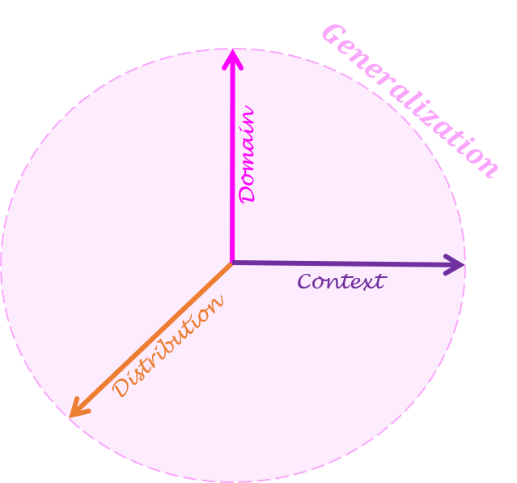
Most benchmarks focus on intra-dataset performance assessment, using a dataset’s train and test splits.
Even though careful selection of the test samples can guarantee the quality of the evaluation, the dataset
generation process may sometimes be biased due to inherent data collection reasons
(e.g. same camera types, restricted availability of capture targets).
To overcome such issues and take a step towards measuring progress in in-the-wild settings, we decompose generalization into three different axes:
i) target depth distribution,
ii) scene context, and
iii) varying camera domain.
We render the GibsonV2 dataset [8] and split it to deliver test sets belonging to each axis.
Data Generation
Using Matterport3D [1] for training and the Pano3D GibsonV2 [2] splits for testing,
the benchmark delivers a zero-shot cross-dataset transfer evaluation that can be
applied to different generalization settings on-demand. In addition,
Pano3D offers renders in two resolutions (\(1024 \times 512\) and \(512 \times 256\)).
We further release a big part of GibsonV2 [2] that has not been used in the Pano3D testing splits,
and can be used as additional training data.
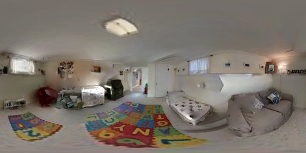
GV2 Tiny split
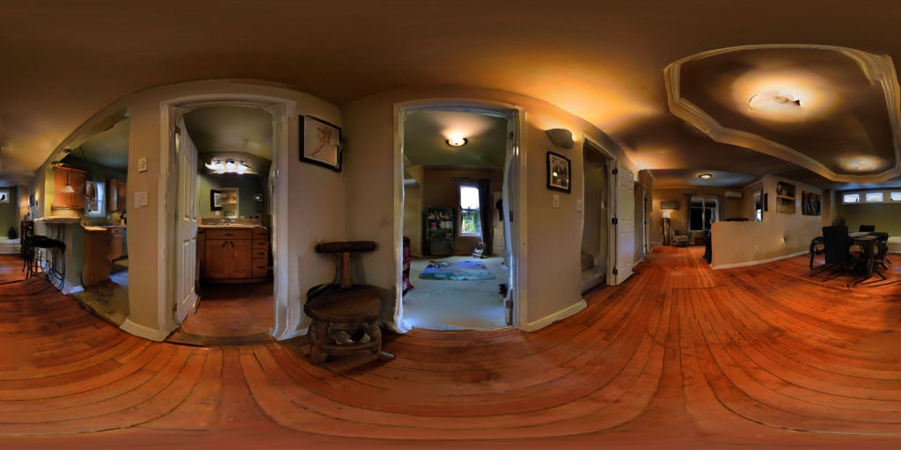
GV2 Medium split
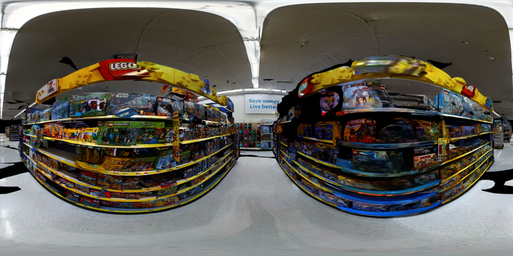
GV2 Full+ split
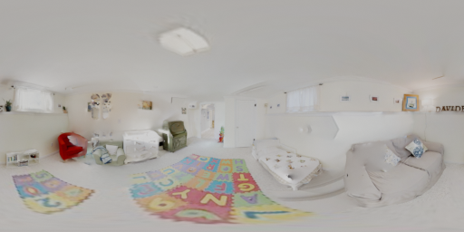
GV2 Filmic
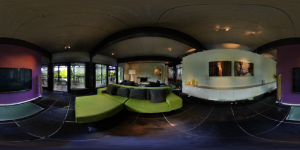
M3D
Download
To download the Pano3D dataset we follow a two-step process:
Access to the Pano3D dataset requires agreement with the terms and conditions for each of the 3D datasets
that were used to create (i.e. render) it, and more specifically, Matterport3D [1] and GibsonV2 [2].
Therefore, in order to grant you access to this dataset, we need you to first fill request form.
Then, you need to perform a request for access to the respective Zenodo repositories,
where the data are hosted (more information can be found in our download page).
Due to data-size limitations, the dataset is split into six (6) repositories,
which respectively contain the color image, depth and normal map renders for each image.
The repositories are split into the two resolutions, with each subgroup of 3 repositories
containing the entire Matterport3D [1] dataset renders, the entire GibsonV2 [2] test split renders,
and the remainder of GibsonV2 [2] which is used as additional training data.
Therefore, a separate request for access needs to be made to each repository in order to download
the corresponding data.
Note that only completing one step of the two (i.e. only filling out the form, or only requesting access
from the Zenodo repositories) will not be enough to get access to the data.
We will do our best to contact you in such cases and notify you to complete all steps as needed,
but our mails may be lost (e.g. spam filters/folders).
The only exception to this, is if you have already filled in the form and need access to another Zenodo repository
(for example you need extra dataset/splits which are hosted on different Zenodo repositories), then you only need
to fill in the Zenodo request but please, make sure to mention that the form has already been filled in so that
we can verify it.
Each volume is broken down in several .zip files (2GB each) for more convenient downloading on low
bandwidth connections. You need all the .zip archives of each volume in order to extract the containing files.
Searching for a solid baseline
Architecture
The Pano3D baseline search relies on single-pass autoencoder architectures supervised by a weighted combination
of different loss functions, each focusing on a specific depth map trait.
For the autoencoders we use a simple convolution decoder and focus our search on the encoder part, and specifically:
A standard ResNet-152 encoder [3] with \(110M\) parameters {IMAGE}
A standard DenseNet-161 encoder [4] with \(55M\) parameters {IMAGE}
A neural architecture search encoder, PNAS [5] with \(99M\) parameters {IMAGE}
In addition, our search also considers architectures with encoder-decoder skip connections:
A traditional UNet [6] with \(27M\) parameters {IMAGE}
A customized ResNet-152 autoencoder with UNet-like skip connections
starting from the first residual block and \(112M\) parameters {IMAGE}
Losses
For the baseline search, we build upon prior literature regarding depth regression losses [14] and
consider standard supporting losses, as well as a recently presented globalized loss:
A L1 depth error, which is the better performing direct objective [7], supported by:
A multi-scale gradient maching term [8], that aims at preserving boundaries
A surface orientation error term [9], that aims at minimizing the cosine distance between normals
A combined objective for direct depth performance, boundary preservation and surface smoothness,
The above combined error is further supported by a global virtual normal loss (VNL) [10]
For the direct depth performance, it is observed that generally
the combined loss leads to improved performance (with a notable exception being the ResNetskip model).
Interestingly the VNL only improves the performance of the UNet model, which can be attributed to the
combined effect of a smaller receptive field than the other models (inferior global context capture),
and of the localised prediction effect that the skip connections introduce.
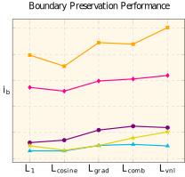
As expected, the smoothness objective hurts boundary preservation while the gradient
matching term boosts, with UNet also benefiting from the VNL loss in terms of preserving boundaries.
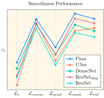
Opposite from the boundary, the gradient matching term hurts smoothness when used in
isolation, but the smoothness term helps balance its effect, and even benefits from their combined use.
Again, UNet is the only architecture to consistently benefit from VNL across all indicators
Best Models per Architecture
From the above analysis, we define the best performing models of each architecture, with the only
conflicting choice being the ResNetskip selected model where a balanced performer was chosen.
Qualitative results follow with the images on the left allowing for a transition between the input color
image and the normal maps from the predicted depth, accompanied by Poisson 3D reconstruction [17] of the
estimated depth maps.
\(\color{#E3D10A}{ResNet}\)
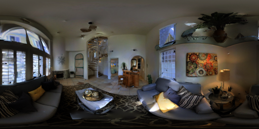
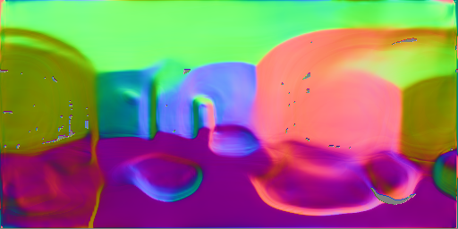
\(\color{#800080}{DenseNet}\)
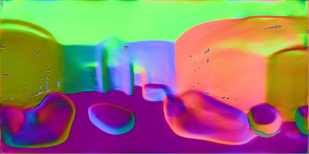
\(\color{#00FFFF}{PNAS}\)
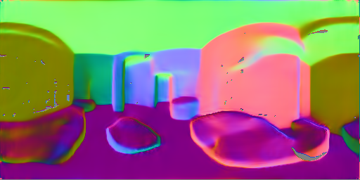
\(\color{#FF00FF}{ResNet_{skip}}\)
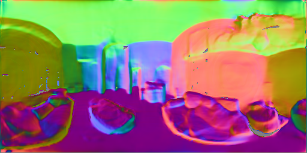
\(\color{#FFA600}{UNet}\)
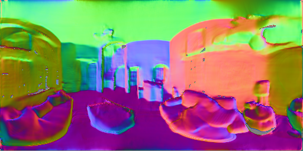
Refining Depth Estimates
Taking into account the developments for depth refinement, Pano3D also includes an analysis of a
recent work using displacement fields [18], which is properly adapted to the spherical domain,
to periodic displacement fields.
We use a specialized guided stacked hourglass architecture as a refinement module that is trained
using a pretrained depth model. Apart from the dual (guided) input encoder path, the guided stacked
hourglass model exchanges information between the color and depth features using
Adaptive Instance Normalization (AdaIn) [19].
GUIDED STACKED HOURGLASS image to be added
The periodic displacement fields consistently improve the boundary preservation performance
of all models apart from the UNet one, which nonetheless, already exhibits the best boundary preservation performance.
Qualitative samples overlaying the detected boundaries for selected models are illustrated below:
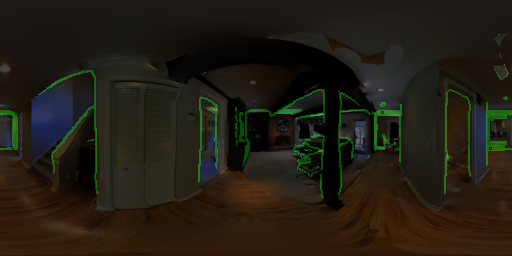
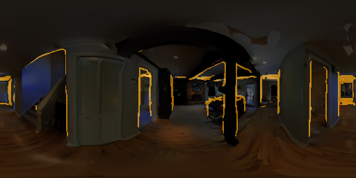
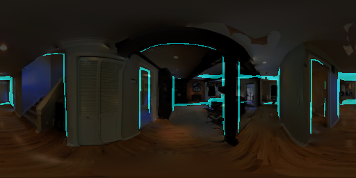
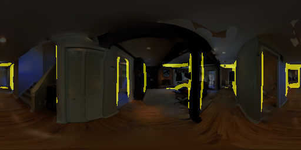
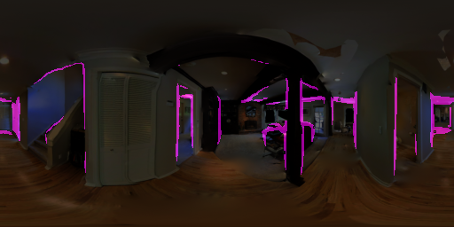
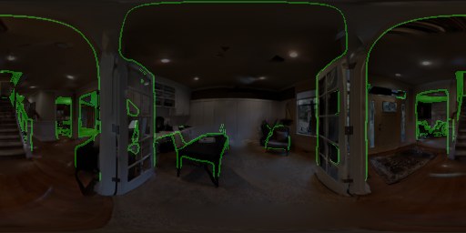
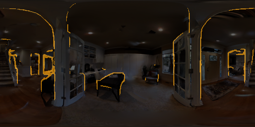
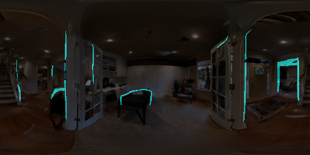
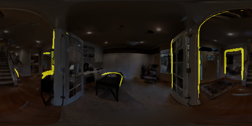
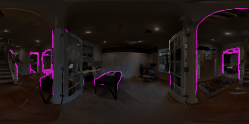
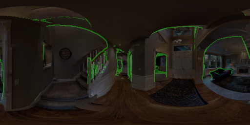
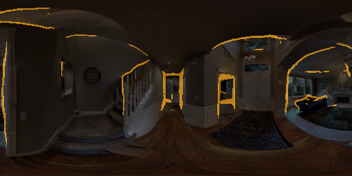
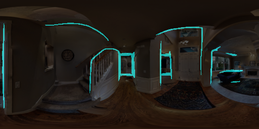
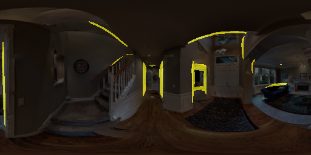
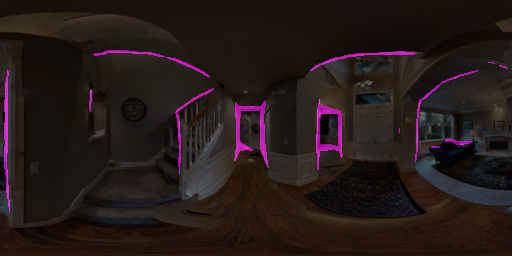
Boundary preservation qualitative comparison between the \(UNet\), \(Pnas\), \(ResNet\) and \(ResNet_{skip}\) models.
From left to right: \(\textbf{i)} GT depth\) (green), \(\textbf{ii)} UNet\) (orange),
\(\textbf{iii)}\) \(Pnas\) (cyan), \(\textbf{iv)}\) \(ResNet\) (yellow),
and \(\textbf{v)}\) \(ResNet_{skip}\) (magenta).
Comparisons
Overall, the Pano3D baseline search shows that skip connections offer higher boundary
preservation performance, naturally at the expense of smoothness, but their direct depth estimation performance
does not suffer from this. The following comparison between the UNet and PNAS architecture (used in [20]) shows this
different, with the advantage figure on the right (similar to [21]) illustrating the areas where each model performers better than the other
\(ResNet\) \(vs\) \(ResNet_{skip}\)
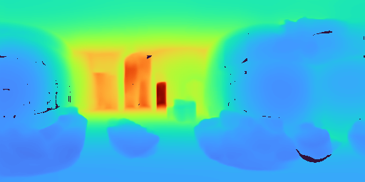
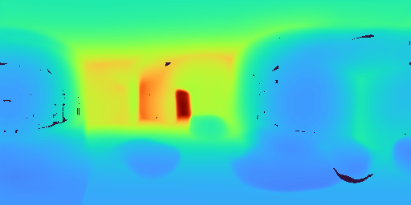
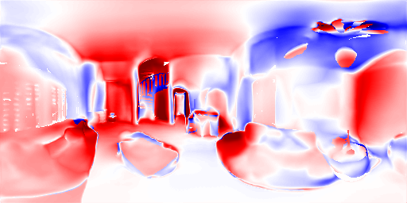
Qualitative comparison between \(\color{#E3D10A}{ResNet}\) \(and\) \(\color{#FF00FF}{ResNet_{skip}}\).
It is apparent that the addition of skip connections allows \(ResNet_{skip}\) to capture finer-grained details.
\({UNet}\) \(vs\) \({PNAS}\)
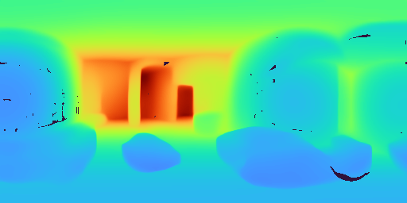
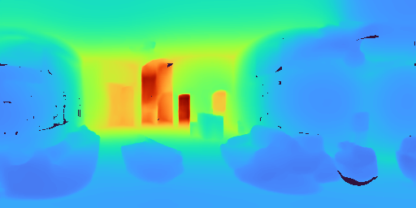
Qualitative comparison between \(\color{#FFA600}{UNet}\) and \(\color{#00FFFF}{PNAS}\).
Apparently, \(\color{#00FFFF}{PNAS}\) provides smoother results while it is clear that \(\color{#FFA600}{UNet}\) is able to capture finer-grained details.
In-the-wild Results
The Pano3D baseline is a solid panorama depth estimation model that is positioned favourably against the state-of-the-art,
with the following samples showing the BiFuse [22] predictions, compared to the UNet ones, when applied to in-the-wild panoramas
acquired via both 360 cameras and stitched mobile phone captures.
\({UNet}\) \(vs\) \({BiFuse}\) [21]
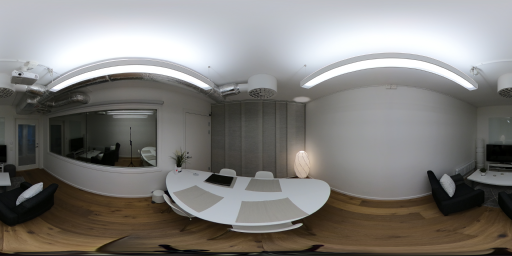
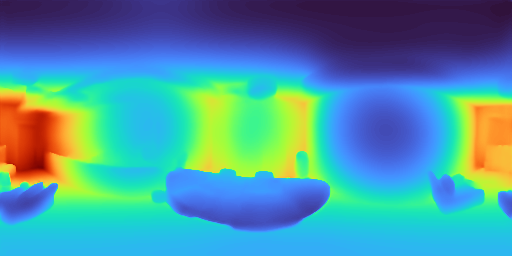
add panorama viewer
add panorama viewer
Qualitative comparison between \({UNet}\) (on the leftc column) \(and\) \({BiFuse}\) [21] (on the right column).
Acknowledgements
This project has received funding from the European Union’s Horizon 2020 innovation programme ATLANTIS under grant agreement No 951900.
References
Chang, A., Dai, A., Funkhouser, T., Halber, M., Niessner, M., Savva, M., Song, S., Zeng, A. and Zhang, Y., 2017. Matterport3d: Learning from rgb-d data in indoor environments. arXiv preprint arXiv:1709.06158
Xia, F., Li, C., Chen, K., Shen, W.B., Martín-Martín, R., Hirose, N., Zamir, A.R., Fei-Fei, L. and Savarese, S., 2019. Gibson env v2: Embodied simulation environments for interactive navigation. Stanford University, Tech. Rep
He, K., Zhang, X., Ren, S. and Sun, J., 2016, October. Identity mappings in deep residual networks. In European conference on computer vision (pp. 630-645). Springer, Cham.
Iandola, F., Moskewicz, M., Karayev, S., Girshick, R., Darrell, T. and Keutzer, K., 2014. Densenet: Implementing efficient convnet descriptor pyramids. arXiv preprint arXiv:1404.1869.
Liu, C., Zoph, B., Neumann, M., Shlens, J., Hua, W., Li, L.J., Fei-Fei, L., Yuille, A., Huang, J. and Murphy, K., 2018. Progressive neural architecture search. In Proceedings of the European conference on computer vision (ECCV) (pp. 19-34).
Ronneberger, O., Fischer, P. and Brox, T., 2015, October. U-net: Convolutional networks for biomedical image segmentation. In International Conference on Medical image computing and computer-assisted intervention (pp. 234-241). Springer, Cham.
Carvalho, M., Le Saux, B., Trouvé-Peloux, P., Almansa, A. and Champagnat, F., 2018, October. On regression losses for deep depth estimation. In 2018 25th IEEE International Conference on Image Processing (ICIP) (pp. 2915-2919). IEEE
Li, Z. and Snavely, N., 2018. Megadepth: Learning single-view depth prediction from internet photos. In Proceedings of the IEEE Conference on Computer Vision and Pattern Recognition (pp. 2041-2050).
Wang, X., Fouhey, D. and Gupta, A., 2015. Designing deep networks for surface normal estimation. In Proceedings of the IEEE Conference on Computer Vision and Pattern Recognition (pp. 539-547).
Yin, W., Liu, Y., Shen, C. and Yan, Y., 2019. Enforcing geometric constraints of virtual normal for depth prediction. In Proceedings of the IEEE/CVF International Conference on Computer Vision (pp. 5684-5693).
Eigen, D., Puhrsch, C. and Fergus, R., 2014. Depth map prediction from a single image using a multi-scale deep network. arXiv preprint arXiv:1406.2283.
Zioulis, N., Karakottas, A., Zarpalas, D., Alvarez, F. and Daras, P., 2019, September. Spherical view synthesis for self-supervised 360 depth estimation. In 2019 International Conference on 3D Vision (3DV) (pp. 690-699). IEEE.
Hu, J., Ozay, M., Zhang, Y. and Okatani, T., 2019, January. Revisiting single image depth estimation: Toward higher resolution maps with accurate object boundaries. In 2019 IEEE Winter Conference on Applications of Computer Vision (WACV) (pp. 1043-1051). IEEE
Koch, T., Liebel, L., Fraundorfer, F. and Korner, M., 2018. Evaluation of cnn-based single-image depth estimation methods. In Proceedings of the European Conference on Computer Vision (ECCV) Workshops (pp. 0-0)
Girardeau-Montaut, D., 2006. Détection de changement sur des données géométriques tridimensionnelles (Doctoral dissertation, Télécom ParisTech).
Cignoni, P., Rocchini, C. and Scopigno, R., 1998, June. Metro: measuring error on simplified surfaces. In Computer graphics forum (Vol. 17, No. 2, pp. 167-174). Oxford, UK and Boston, USA: Blackwell Publishers.
Kazhdan, M., Bolitho, M. and Hoppe, H., 2006, June. Poisson surface reconstruction. In Proceedings of the fourth Eurographics symposium on Geometry processing (Vol. 7).
Ramamonjisoa, M., Du, Y. and Lepetit, V., 2020. Predicting sharp and accurate occlusion boundaries in monocular depth estimation using displacement fields. In Proceedings of the IEEE/CVF Conference on Computer Vision and Pattern Recognition (pp. 14648-14657).
Huang, X. and Belongie, S., 2017. Arbitrary style transfer in real-time with adaptive instance normalization. In Proceedings of the IEEE International Conference on Computer Vision (pp. 1501-1510).
Lee, J. and Kim, C.S., 2020, August. Multi-loss Rebalancing Algorithm for Monocular Depth Estimation. In ECCV (17) (pp. 785-801).
Sun, C., Sun, M. and Chen, H.T., 2020. HoHoNet: 360 Indoor Holistic Understanding with Latent Horizontal Features. arXiv preprint arXiv:2011.11498.
Wang, F.E., Yeh, Y.H., Sun, M., Chiu, W.C. and Tsai, Y.H., 2020. Bifuse: Monocular 360 depth estimation via bi-projection fusion. In Proceedings of the IEEE/CVF Conference on Computer Vision and Pattern Recognition (pp. 462-471).